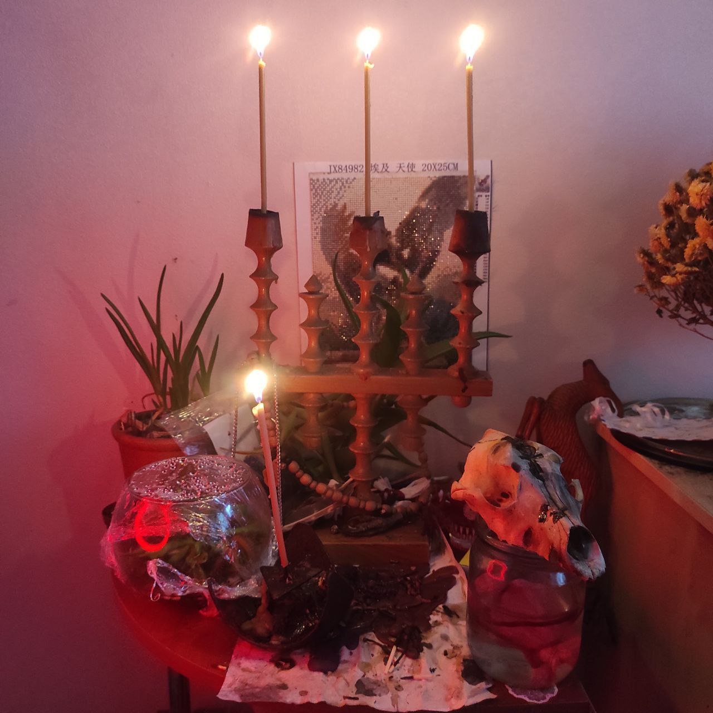
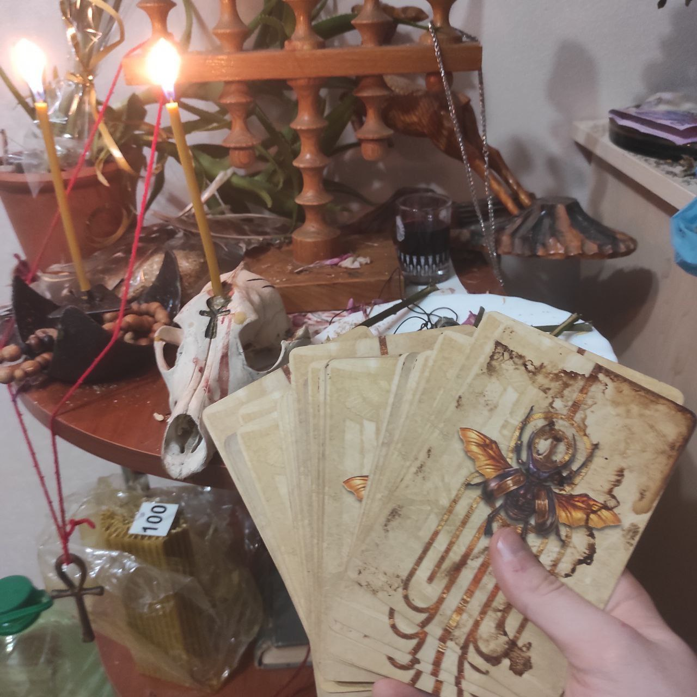
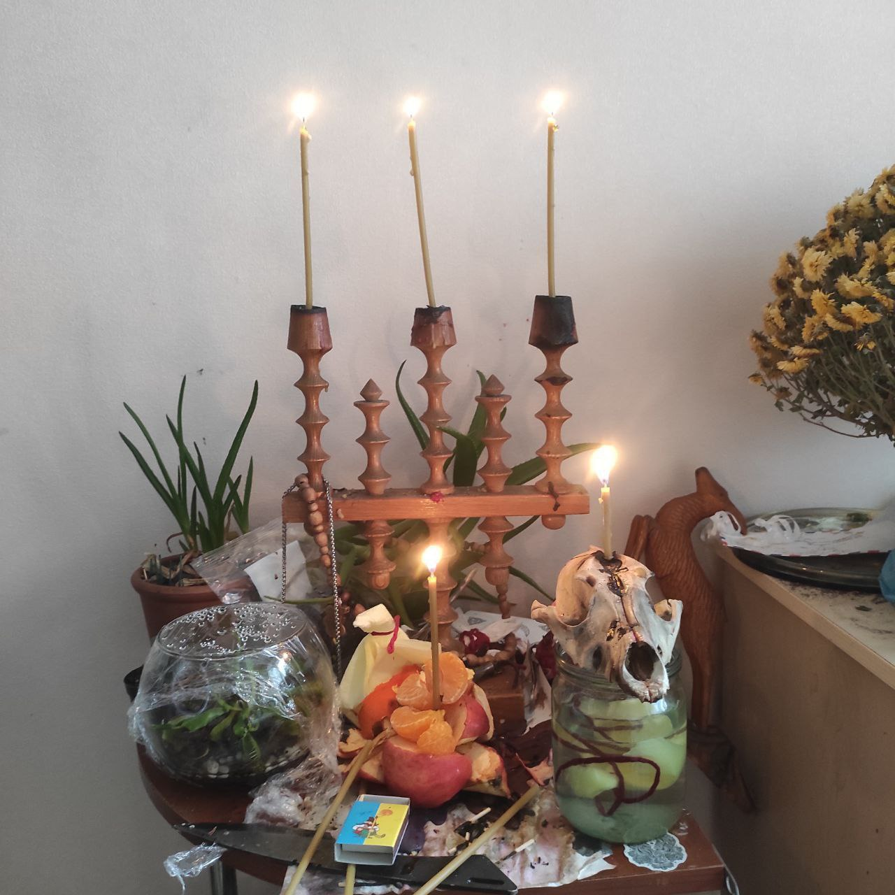
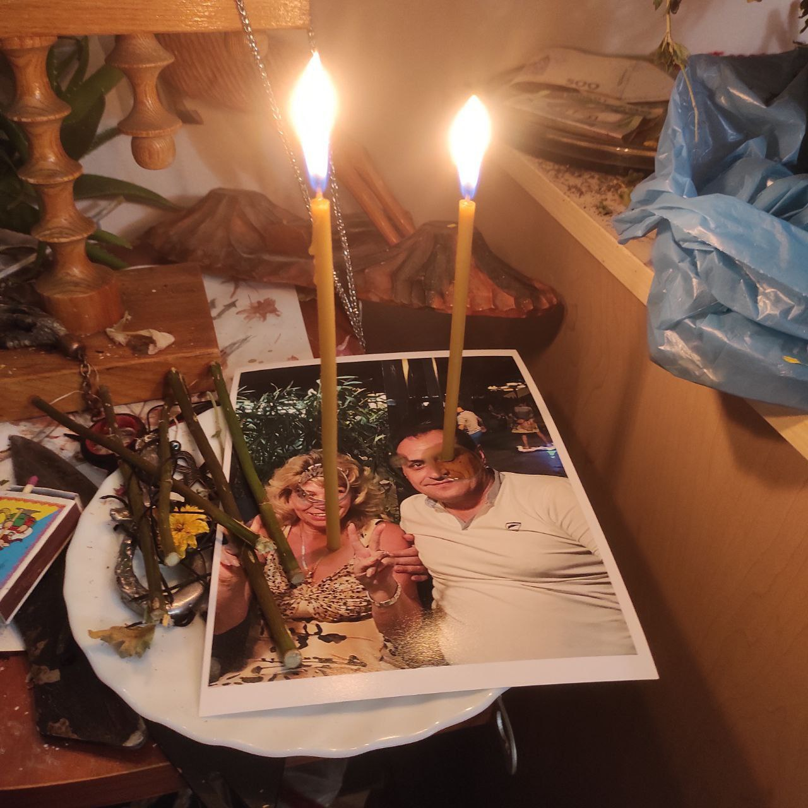

At the age of 20, my visions and senses became more acute, I began to practice lucid dreaming, shamanism, study demonology, and practice various magical currents.
At the age of 23, I finally received the first answers and took the path of the Priest when the Gods contacted me and showed me that I am connected to the star Sirius and the souls that come to this world to help people realize their mission and grow spiritually. At this age I began to actively practice integrity, study medicine
At the age of 25 he began to recruit students and followers.
My help and services:
Love works
- Ritual for the impossibility of cheating on a partner - 10 000 UAH or 350 dollars
- The heat of feelings - 5000 UAH or 200 dollars
- Binding - 12 000 UAH or 400 USD
- Love spell - from 15 000 UAH or from 500 dollars
Works on cleaning from the negative
- Simple cleansing to restore the emotional state. One-time - 1000 UAH or 50 USD
- Once a Sunday during the month to clean emotional channels, remove domestic conflicts and quarrels - 5000 UAH or 250 USD
Protective works
- Works on removal from danger, from other people's magical interventions and sad accidents - from 5000 UAH or 250 USD
Works for justice
- Work to punish offenders and return lost - 6000 UAH or 300 USD
Spoils
- Damage and destructive types of work from 1000 dollars
Study
- Magic lessons - 14 lessons, course price - $500
- Tarot lessons - 12 lessons, course price - $250
Some of my works
Ritual.
Appeal to the Gods of Egypt, for help - to the client.

Ritual.
Ritual.

Amulet - attracts the attention of men and the attached spirit of the sun to fulfill desires.

Return lost and protection of a person who has suffered from fraudsters.
Nudge partners to the wedding.

Protection of the child. warding off diseases. Works for children - free of charge.

Return of the husband to the family. Purification, recover love feelings.
